DeepSeek-V4-Pro是一个1.6万亿参数的Mixture-of-Experts（MoE）模型，同时发布FP8和FP4权重。这个规模的模型自然受益于NVIDIA Blackwell等加速器：它们有更多HBM、更高计算吞吐和原生FP4 Tensor Cores。然而H20 GPU仍被广泛部署，尽管缺乏这些优势。
硬件约束不会放松服务要求。长上下文prefill仍必须控制首token时间（TTFT）。交互式decode必须满足每个服务层的每输出token时间（TPOT）目标。持续流量必须平衡聚合吞吐与KV缓存容量。短输入、长上下文、延迟敏感请求和高并发以不同方式给系统施压；没有通用配置能把它们都服务好。
一个模型需要多个serving profile。工作负载特征、服务级目标（SLO）和实测硬件行为共同决定部署拓扑和执行路径：把serving profile匹配到工作负载；优化prefill路径（Attention-CP8 → MoE-TP8与上下文并行通信）；优化decode路径（DSpark投机解码路径、执行精修、专家路由与通信-计算重叠）。
推进延迟前沿。batch size 1下单节点H20-141GB参考达到271 output tokens/s，对比B300上报的383.7 tokens/s。尽管硬件差距巨大，针对工作负载的系统优化把观察到的decode性能比缩小到1.42×。
覆盖服务包络。跨更广的profile家族，优化prefill达到每节点8.45k input tokens/s，43.7秒处理1M-token prompt。吞吐导向decode的DP16-EP16效率参考达到每节点4.67k output tokens/s，对应平均TPOT27.4 ms。这些结果来自不同profile，每个针对不同上下文长度、延迟、吞吐和容量组合选择并优化。
贡献是方法论，不是单个基准。场景特定服务允许每个工作负载在可用硬件上评测的profile中移动到更好的实测工作点。我们希望这里呈现的部署选择、优化方法和测量，能为在计算、内存、带宽或互连约束下服务前沿模型的团队提供实用参考。
Blackwell提供原始性能；H20提供可部署规模。B300提供原生FP4 Tensor Cores、高得多的FP8吞吐和显著更多HBM。H20无法匹配其计算能力，但它仍在规模上可用，且提供高内存带宽和900 GB/s NVLink。本研究每个节点含八张NVLink连接的GPU。
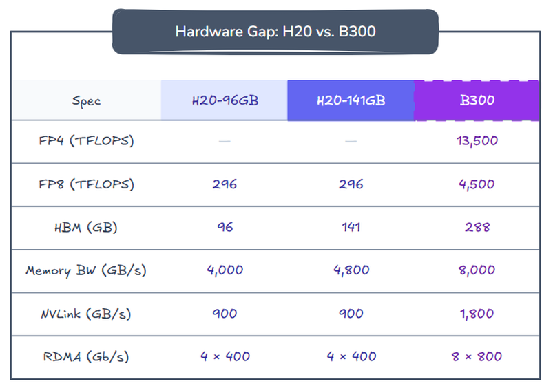
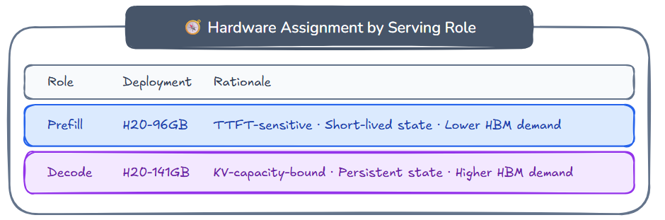
Prefill不保留长期的每请求状态，所以它的硬件选择主要由TTFT、计算和通信效率支配。Decode必须在生成全程保留每个活跃请求的KV缓存，使HBM容量成为上下文长度和并发的直接限制。对本研究部署，这引导我们用H20-141GB做decode、H20-96GB（容量足够我们的prefill工作负载）做prefill。
服务容量最终来自共享的HBM预算：模型权重和每请求KV状态竞争同一内存。我们定义全token容量为分配模型权重和运行时缓冲区后每个rank能持有的最大full-attention KV token数。它是内存上限而非可接受batch的直接保证。
先减小权重足迹。Humming MXFP4AFP8用MXFP4专家权重 + 在线FP8激活，在缺乏原生FP4 Tensor Cores的H20 GPU上减少权重足迹和内存流量。SGLang集成在sglang#23754。模型级精度结果和公共参考测量见附录D.2。
给KV缓存成长空间。Offline C128基线为每个压缩页保留按索引的状态。Online C128改为维护紧凑聚合状态，释放更多HBM给KV缓存池。它引入额外状态维护和投机验证工作，但我们的测试未观察到TPOT回归。
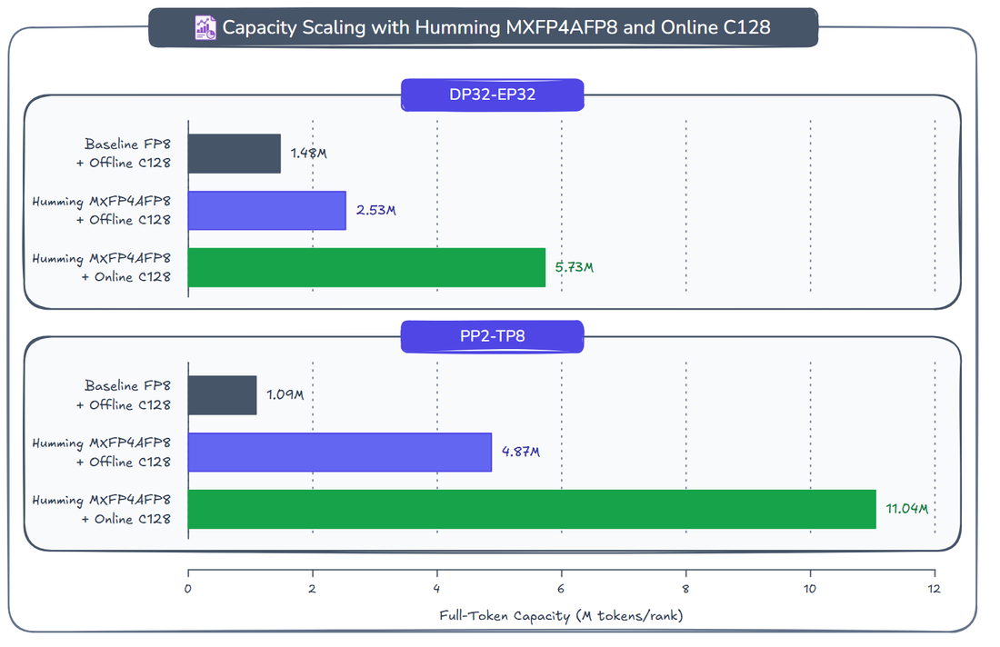
容量增益在权重和KV状态上复合。通过减小权重足迹，Humming MXFP4AFP8把DP32-EP32的全token容量扩展到Baseline FP8 + Offline C128配置的1.71×、PP2-TP8的4.47×。Online C128再把C128辅助状态足迹减少，在Humming之上提供另一个2.268×。两者结合把容量提到DP32-EP32基线的3.88×、PP2-TP8的10.14×。附录D.1提供完整数据。
正确的流水线深度取决于有多少可流水线化的工作。PP2-CP8-TP8和PP4-CP8-TP8共享同一 `Attention-CP8 → MoE-TP8` 执行路径。拓扑层面主要区别是流水线深度：PP2把模型分到两阶段，PP4用四阶段。
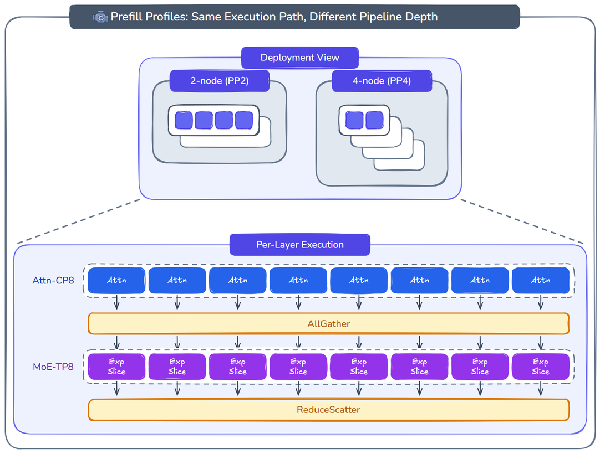
短上下文倾向更低流水线开销；长上下文暴露更多并行。短输入产生更少chunk，让更深流水线欠填充，使填充、排空和跨阶段传输成本更突出。长上下文提供足够chunk保持四阶段忙碌；每阶段层更少，额外节点转化为更多prefill并行。在我们的部署中，这些特征引导我们用PP2-CP8-TP8处理较短上下文、PP4-CP8-TP8处理长上下文工作负载。
低延迟从最短执行路径开始。单节点TP8和PP2-TP8共享同一 `Attention-TP8 → MoE-TP8` 执行路径；区别是模型是否跨节点分区。单节点TP8把全部层放一个H20-141GB节点，避免跨阶段通信和同步。PP2-TP8把模型分到两个流水线阶段。
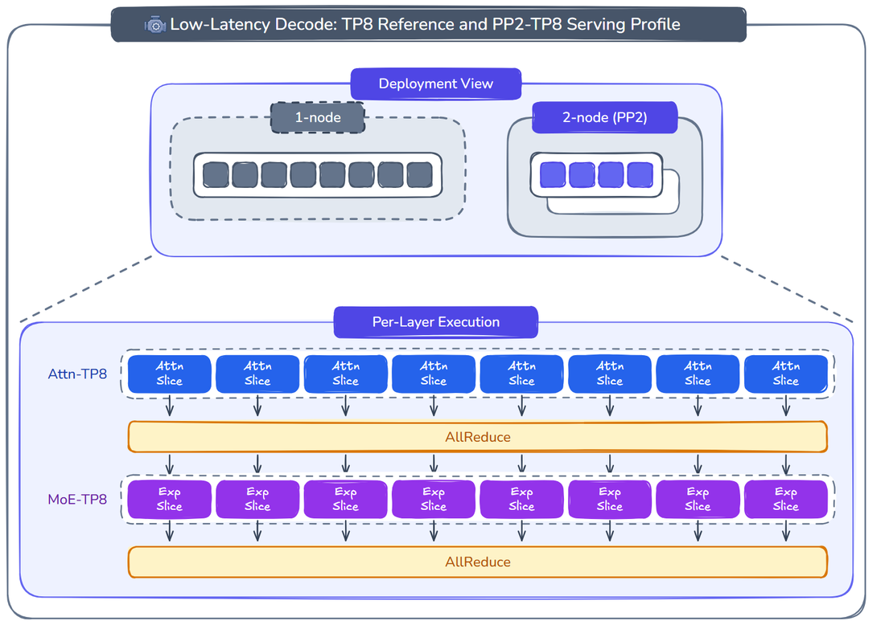
最快的拓扑不总是最可服务的。单节点TP8执行路径更短，但模型权重和服务状态共享单节点HBM，留给KV缓存的空间有限。它无法同时支持长上下文和更大batch。PP2-TP8付出额外流水线开销，但把模型权重分布到两节点，释放更多HBM给KV状态。对我们的延迟和容量目标，我们用单节点TP8作为batch-size-1延迟参考、PP2-TP8作为低延迟服务profile。
高吞吐decode一起扩展数据和专家并行。两个profile都用 `Attention-DP → MoE-EP` 执行路径。DP16-EP16是最小部署单元；DP32-EP32在同一拓扑内扩展DP和EP。
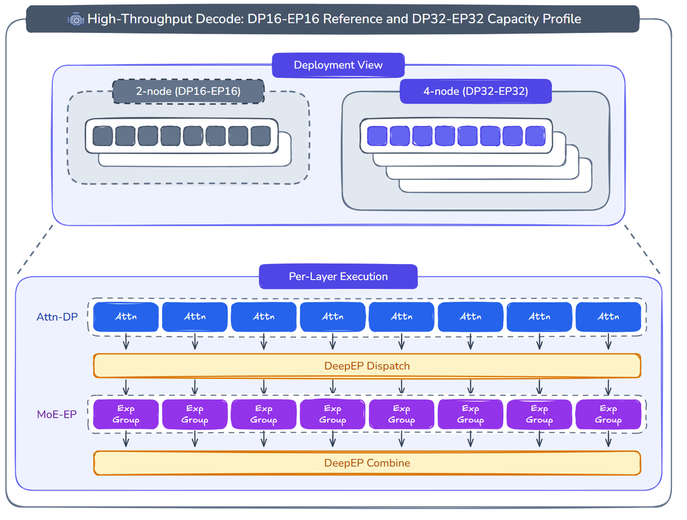
Scale-out优先请求容量而非每GPU吞吐。更大EP组把专家权重分布到更多GPU，释放HBM给KV缓存、容纳更多并发请求。同时，更小比例的MoE流量留在每节点内，更大比例跨节点，可能降低每GPU效率。在评测的profile中，我们用DP16-EP16作为最小部署单元和效率参考，DP32-EP32扩展请求容量。
Prefill性能是系统问题。专家失衡、上下文并行通信和生产路由形状共同决定TTFT；优化孤立内核不够。
更少流量仍可能更久。MoE-EP只交换路由token，但真实prefill流量呈现显著专家偏斜。拥有热门专家的rank做更多计算、成为straggler；其他所有rank在combine步骤等最慢路径。更低的通信量不转化为更低TTFT。
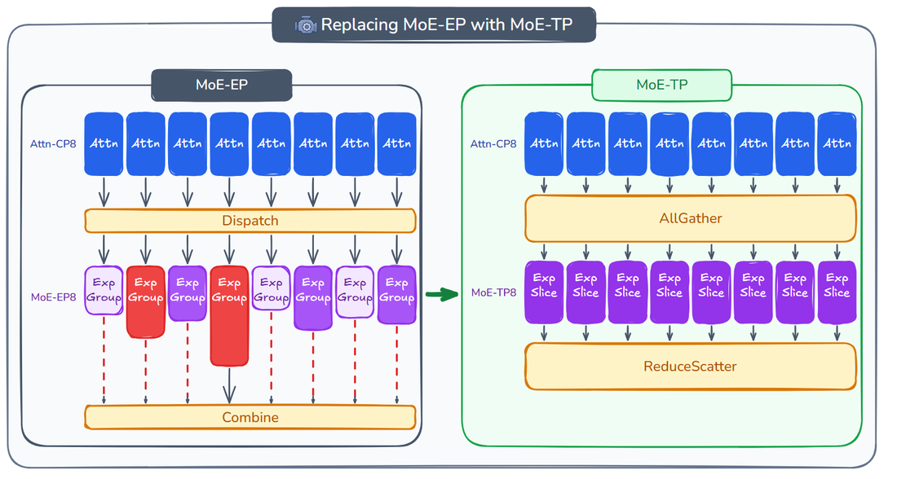
在最小化流量前先平衡计算。对本文评估的H20 prefill工作负载，PP2和PP4都用MoE-TP。全序列all-gather和reduce-scatter引入更多通信，但流量保持在高速NVLink上、成本稳定可预测。所有TP rank对相同路由token执行张量并行计算，防止专家偏斜变成rank级长尾。对这个工作负载，可预测通信比不可预测失衡便宜。实现见sglang#24947。
构建可复用collective快路径。MoE-TP用可预测collective流量替换不可预测专家失衡，使通信效率成为下一个瓶颈。我们让对称内存跨TP和CP可复用，允许AllReduce、AllGather和ReduceScatter共享注册缓冲区快路径和适用的Hopper加速。支撑的上游工作跨越内存池所有权、communicator注册、MoE-TP collective缓冲区和CP Attention/KV-cache缓冲路径。
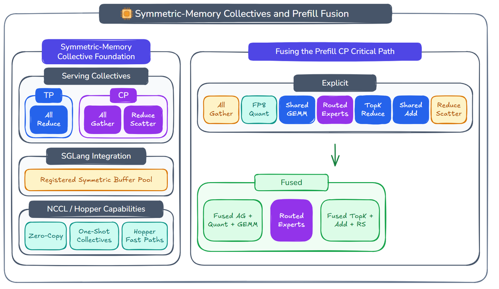
然后缩短Prefill关键路径。更快的collective本身不消除通信与计算的边界。对32K单chunk情形，我们构建融合路径：用copy-engine驱动的AllGather与融合FP8量化和共享专家GEMM重叠，然后在第二个Triton内核里组合TopK归约、共享专家加法和ReduceScatter。这把七个算子重组成三个执行组，在匹配的PP4 A/B中TTFT降低约3.5%。
通用调优错过重要的形状。Prefill路由把token不均匀地分布到384个专家，所以有效 `M` 维度聚类到一小组离散值。W13和W2也在不同形状上操作，单一通用启发式无法同时优化两条路径。
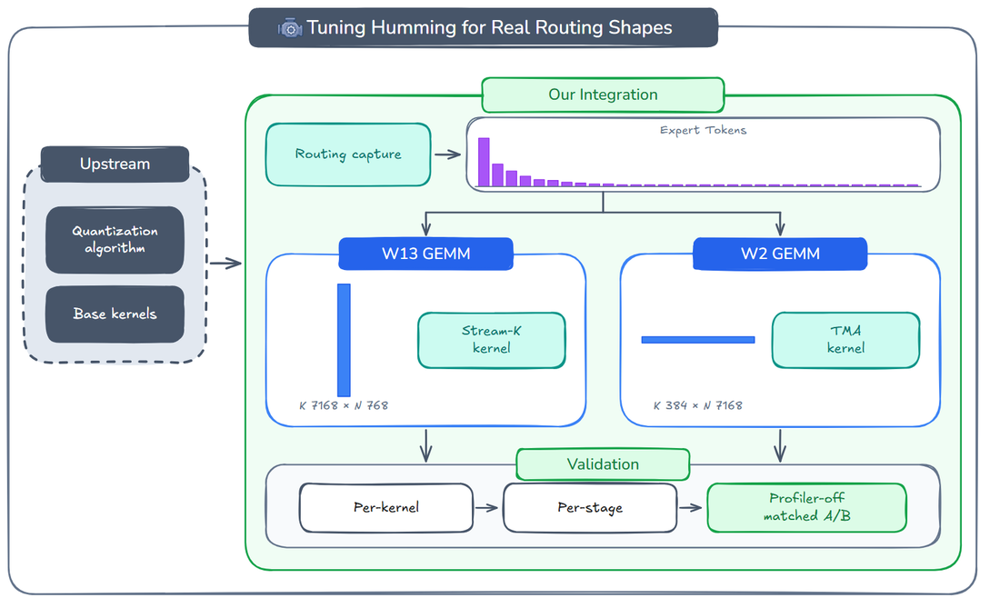
从生产路由调优。我们从真实路由直方图提取高频形状，为W13和W2构建独立exact-shape配置，在内核、流水线阶段和匹配A/B级别验证。优化目标不是合成的 `M` 范围，而是我们实际服务的路由分布。在32K匹配PP4 A/B中，选定MoE内核延迟下降约21%，转化为端到端TTFT减少11.35%。
Decode优化在我们的实现中是profile特定的。PP2-TP8需要跨投机流水线阶段协调，DP32-EP32专注优化高并发下的精修步骤和专家路由。Humming融合和重叠改善这些服务拓扑之下的共享MoE热路径。
流水线并行切分投机循环。在PP2-TP8中，目标执行跨两个流水线阶段，而DSpark drafter只驻留在最后阶段。Stage 0发送目标隐藏状态给Stage 1，它执行验证、接受token、为下一轮生成候选。
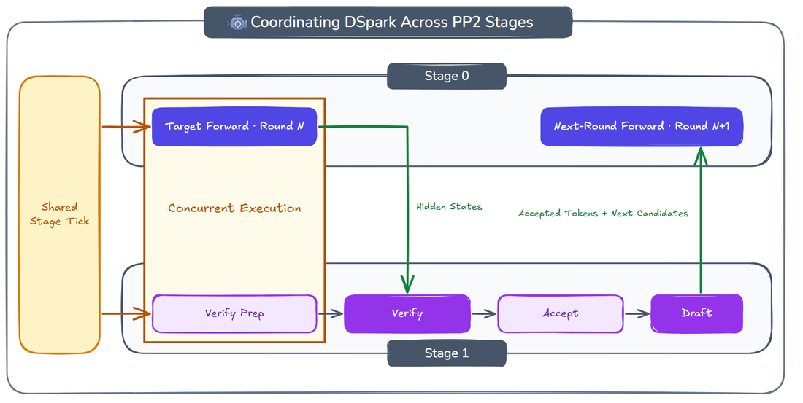
让两阶段像一阶段一样前进。每个投机轮跨流水线边界。我们在一个执行协议下协调两阶段和所需中间传输，防止阶段进入不同轮次，同时避免冗余同步。PP特定DSpark集成正上游到sglang#32281。
本小节的匹配A/B用DP32-EP32在4K、每DP rank 32并发请求。
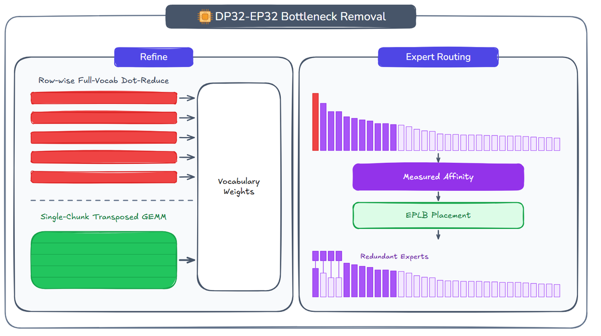
为精修选择正确的执行形状。精修步骤用全词表投影重打分DSpark的候选集。高并发下逐行dot-reduce为每个活跃行反复读词表权重，在每个decode步骤造成持久尾部。我们把活跃行合并进一个转置GEMM，减少冗余内存流量、缩短精修路径。每GPU吞吐提升22.8%。
从实测路由放置专家。DSpark流量也呈现显著专家偏斜。我们记录代表性请求的路由亲和，用它配置专家并行负载均衡（EPLB）和冗余专家，防止少数热门专家反复延长关键路径。每GPU吞吐提升13.5%。
这些优化位于服务拓扑之下，可被基于Humming的decode profile复用。下面匹配结果用DP32-EP32在4K、每DP rank 32并发请求。
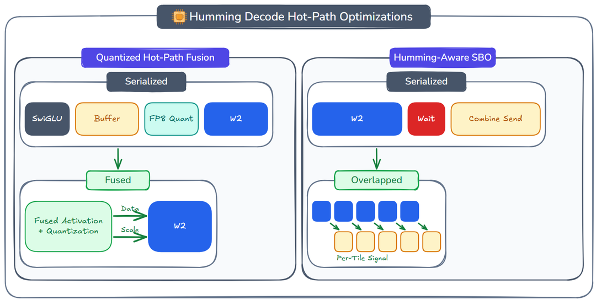
移除额外量化前向。我们把SwiGLU激活与量化融合，使融合内核直接产生W2所需的数据和scale。这消除对中间缓冲区的重复访问、移除独立量化前向，让W2更早开始。在匹配DSpark A/B中，每GPU吞吐提升44.0%。
用W2重叠通信。我们把我们之前工作的Single-Batch Overlap（SBO）机制适配成Humming-Aware SBO。逐tile信号允许DeepEP在W2输出tile一完成就启动对应combine发送，无需等整个GEMM。在相同工作点更早的匹配非投机A/B中，SBO相对FP8传输层恢复4.12% 吞吐。
PP2强化短上下文profile。PP2在全部九个输入长度改善，几何平均吞吐增益36.5%，峰值总输入吞吐16,900 tokens/s。更浅流水线减少短请求的填充-排空开销，让PP2用更少资源保持更低TTFT。
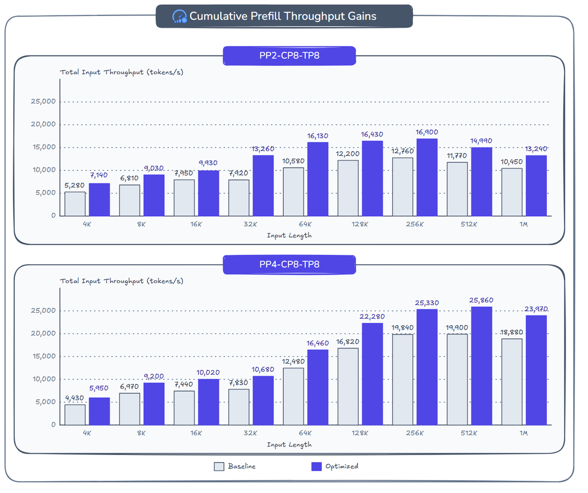
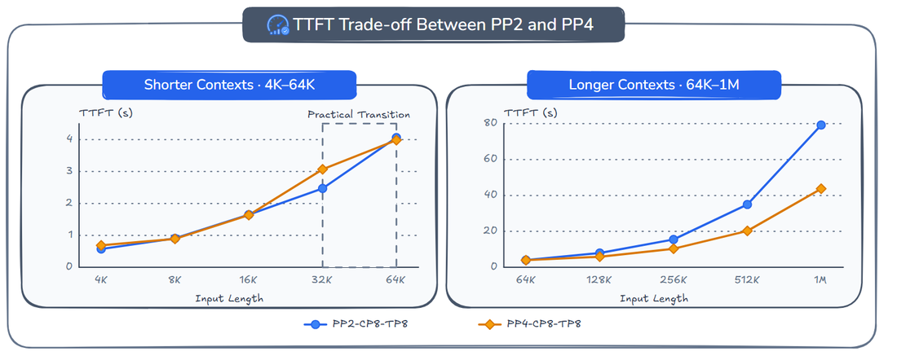
PP4把增益带进长上下文。PP4跨同样九点交付几何平均31.8% 吞吐增益。随着上下文增长，更深流水线有足够工作摊销固定成本：总输入吞吐在512K达到25,860 tokens/s、1M保持23,970 tokens/s。
上下文长度移动PP2/PP4权衡。相对PP4，PP2在4K把TTFT降低16.7%、32K降低19.5%。两profile在8K、16K、64K保持在2% 内。PP4从128K起建立决定性优势，相对PP2在128K/256K/512K/1M分别降低TTFT26.2%、33.3%、42.1%、44.8%。因此我们把路由边界当作从实测上下文长度范围导出的操作策略，而非通用交叉点。
优化DSpark重置延迟基线。在图15的四个输入长度上，优化DSpark在batch size 1把峰值TPOT降低74.8%-78.0%。在每对测量共享的最大batch，降幅仍为52.2%-60.0%。增益从8K到1M保持，而非限于短上下文或单请求执行。
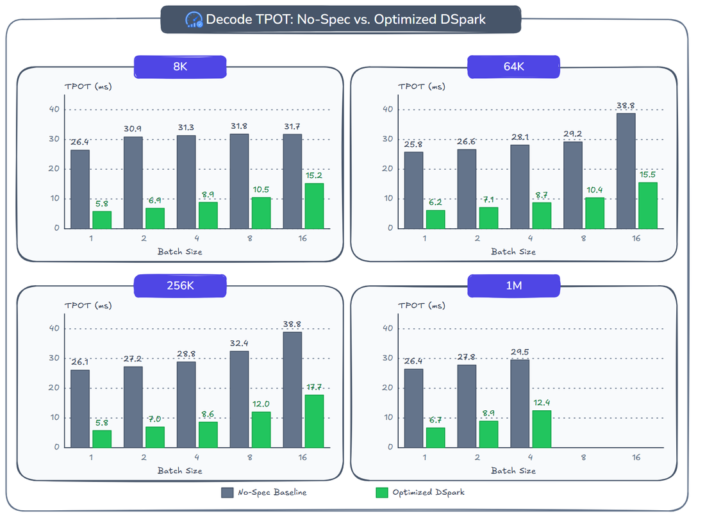
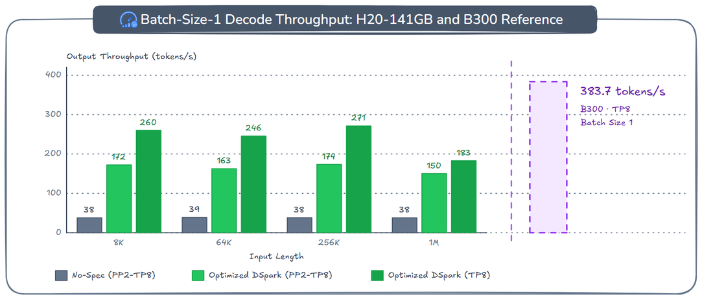
观察到的服务性能远比峰值计算比暗示的接近。在图16的四个输入长度上，PP2-TP8上优化DSpark在batch size 1达到150-174 tokens/s。单节点TP8参考达到183-271 tokens/s。对实际执行路径用的精度，B300有H20-141GB约45.6× 的峰值Tensor Core计算（B300 FP4 vs H20 FP8）和1.67× 内存带宽。然而观察到的最高生成率分别是383.7 tokens/s（B300）和271 tokens/s（H20-141GB）：比例1.42×。即使对照这个强得多的硬件参考，工作负载特定优化让H20-141GB参考在观察服务性能上大幅接近。
容量让PP2-TP8偏向我们的生产目标。单节点TP8更快，但1M上下文下它只有batch size 1的KV缓存容量。它无法容纳更大batch或更多并发请求。通过把模型权重分布到两个流水线阶段，PP2-TP8在1M、512K、256K分别支持batch 4、8、16。用Online C128，其全token容量达11.04M tokens/rank。对与我们相似的上下文长度和并发目标，我们建议保留单节点TP8作为延迟参考、用PP2-TP8作为低延迟服务profile。
图17显示吞吐-交互性前沿如何随系统演进。横轴是交互性（tokens/s/user），纵轴是吞吐（tokens/s/GPU）。在这些DP/EP profile中每个DP rank映射一个GPU；交互性是每GPU吞吐除以每DP rank并发请求数。更右上方的点提供更好的用户可见生成速度与GPU效率组合。四条曲线代表累计系统演进，而非第4节任何优化的孤立增益。
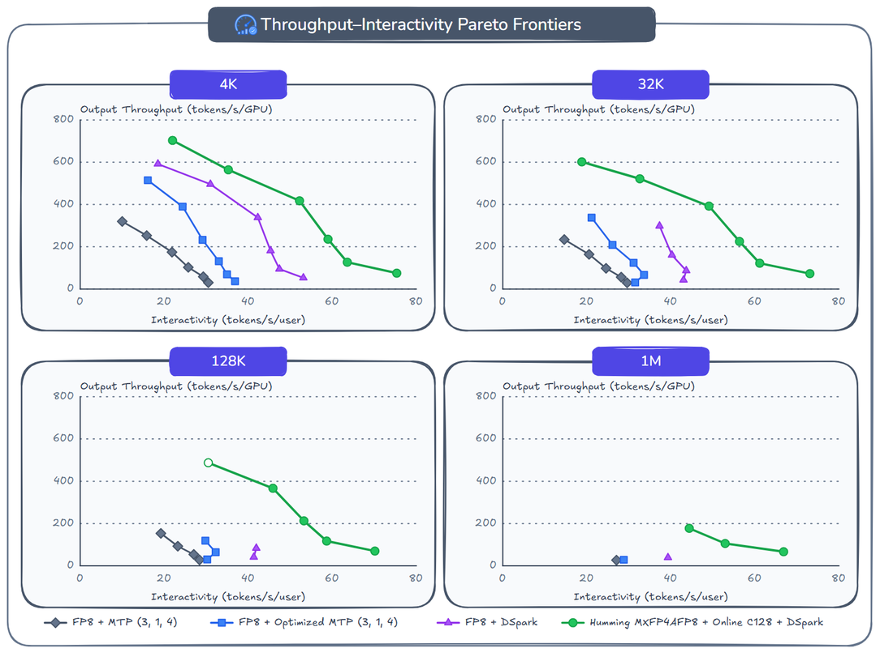
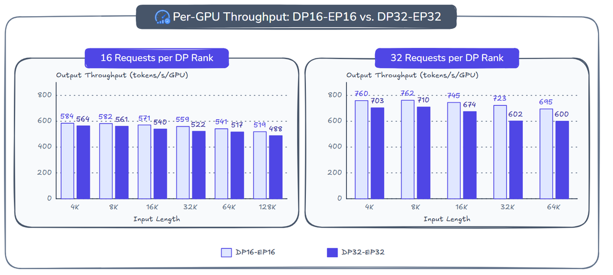
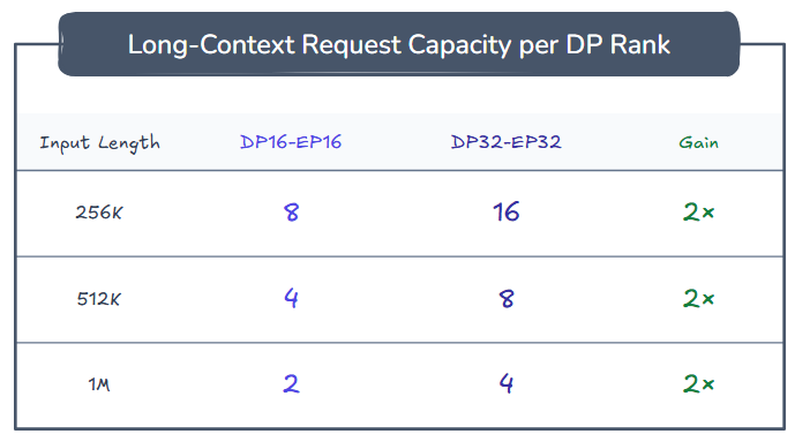
MTP指multi-token prediction；`(3, 1, 4)` 配置用三个投机步、top-k 1、四个draft token。
系统优化移动整个前沿。在4K、每DP rank 32并发请求，每GPU吞吐从319.92 tokens/s/GPU升到703.15 tokens/s/GPU，2.20× 增长。在1M、每DP rank一请求，从27.05 tokens/s/GPU升到66.82 tokens/s/GPU。前三个系统里程碑在1M只能每DP rank处理一个请求；最终系统支持四个并达到177.48 tokens/s/GPU。扩展的操作包络来自更快执行和更大容量。
更小部署单元在选定高并发工作点保持效率。在早前H20上服务DeepSeek-V3/R1的工作中，我们发现更小EP部署单元能在节点内保持更大比例MoE流量。DeepSeek-V4-Pro在图18的工作点显示同样优势：每DP rank 16和32并发请求时，DP16-EP16交付约3.6%-20% 更高的每GPU吞吐。全扫描在每并发层级不单调，所以我们用DP16-EP16作为效率参考而非DP32-EP32的通用替代。
容量改变首选高吞吐profile。DP16-EP16每GPU更高效，但DP32-EP32把专家权重分布到更多rank、释放额外HBM给KV缓存。在256K、512K、1M，每DP rank最大并发请求分别从8、4、2增到16、8、4：一致的2× 扩展。对与我们相似的长上下文并发目标，这个额外容量让DP32-EP32成为容量导向的高吞吐profile，DP16-EP16仍作为效率参考有用。
一个模型不需要一个妥协的profile。我们为H20上的DeepSeek-V4-Pro构建了场景特定服务栈。Prefill按上下文长度在PP2和PP4间切换。Decode用PP2-TP8做低延迟、DP32-EP32做高吞吐。通过协同设计容量、部署拓扑和执行路径，H20能支撑1M-token上下文并满足多个服务SLO，尽管计算有限、缺乏原生FP4 Tensor Cores。
可迁移的成果是场景驱动的方法论。Serving profile不应只从硬件规格或孤立基准选择。我们建议从工作负载、SLO、上下文长度和并发出发，然后用profiling识别约束资源，把它转化为具体拓扑和执行路径决策。我们希望这套方法论帮助AI基础设施团队在多样化资源约束下构建实用的前沿模型服务系统：无论瓶颈是计算、内存容量、内存带宽还是互连：并把经验分享给更广的开源生态。
参考：https://www.lmsys.org/blog/2026-08-19-deepseek-v4-pro-engine-optimization-h20